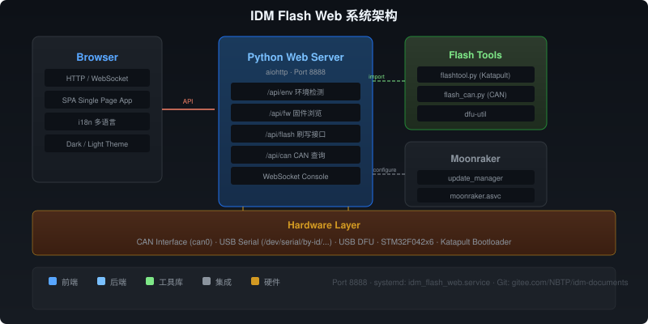

Moonraker 集成
IDM Flash Web 可以与 Klipper 生态系统的 Moonraker API 集成。
自动配置
运行 install.sh 后自动配置：
update_manager (moonraker.conf)
[update_manager idm_flash_web]
type: git_repo
channel: dev
path: ~/idm-documents
origin: https://gitee.com/NBTP/idm-documents.git
is_system_service: False
managed_services: idm_flash_web
info_tags:
desc=IDM Flash Web Toolmoonraker.asvc
在 ~/printer_data/moonraker.asvc 中添加 idm_flash_web。
功能
- 在线更新：Fluidd/Mainsail Update Manager 中一键更新
- 服务管理：Services 面板查看、启停服务
- 状态查看：通过 Moonraker API 获取打印机连接状态

手动配置
如果自动配置失败，可手动添加上述配置。